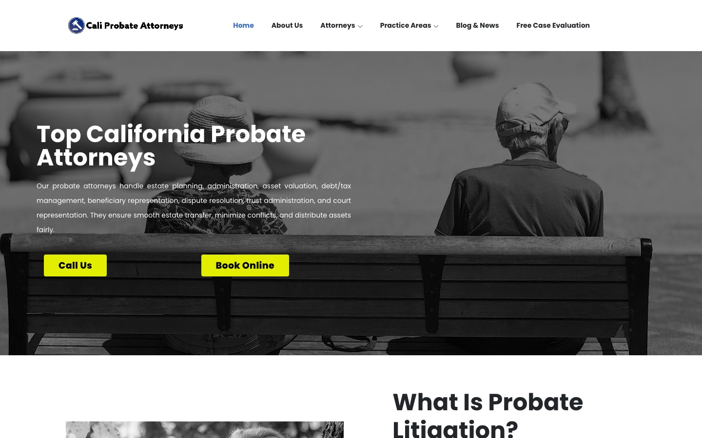
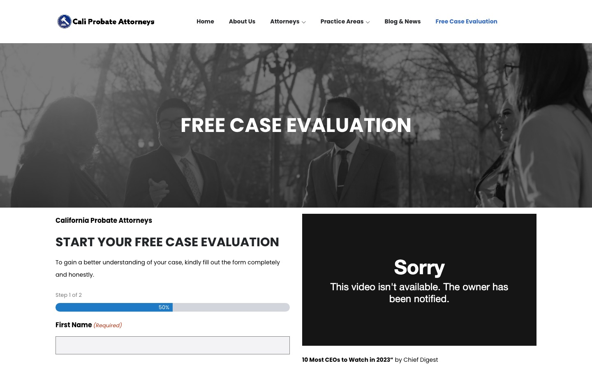

Case study · Law firms
California Probate Attorneys: niche WordPress SEO for a probate-only site
A probate-only California law-firm site on WordPress and Elementor: what is in place for search, and what an October 2026 review found.
At a glance
- Who it's for
- People in California facing a will contest, trust dispute or estate dispute who want a probate litigation firm rather than a general practice.
- Core stack
- WordPress, Elementor, ThemesFlat theme, All in One SEO Pro, Gravity Forms
- What sets it apart
- A narrow site: three probate litigation practice pages, attorney profiles, a two-step free case evaluation form and a large blog archive.
The live site
Screenshots captured in October 2026. Each opens the live page.


The challenge
Probate searches are specific. A person looking for help with a contested will or a trust dispute is not searching for a general civil litigation firm, and a probate-only site has to make that focus obvious on every page: in titles, headings, practice pages and blog topics.
The site also has to turn a worried visitor into a form submission, and it has to stay on topic as the blog grows.
What is built
The site runs on WordPress with Elementor and a ThemesFlat theme. It has three practice pages (contested will, estate litigation and trust dispute), attorney profile pages, a free case evaluation page with a two-step Gravity Forms form, and a blog. The homepage repeats the "Schedule Your Free Case Evaluation Today!" call to action between sections, with Call Us and Book Online buttons.
All in One SEO Pro handles titles, canonicals (tags that tell search engines which address is the main one), schema (structured data that describes the page to search engines) and sitemaps. The sections below describe what is in place and what a review of the public pages found. They do not describe work done by Trusted Tech Leader on this site.
Key pages and structure
Read from the public pages, sitemaps and page source.
- 01
Homepage
Covers what probate litigation is, why to choose a probate attorney, the litigation process, three practice areas, three attorneys, an FAQ and the latest posts.
- 02
Practice pages
Three pages: contested will, estate litigation and trust dispute. Each has a process section, an attorney block and an FAQ heading. URLs use the spelling
practise_area. - 03
Attorney pages
An attorneys index and sixteen profile URLs under
/attorney/in the sitemap. - 04
Free case evaluation
A two-step Gravity Forms form with a progress bar, a phone number and a video embed.
- 05
Blog
265 URLs in the post sitemap. 69 have slugs starting "how-courts", and others are older probate, will and trust articles.
- 06
Supporting pages
About Us, Practice Areas, Disclaimer, Private Policy and Terms of Use pages, plus a thank-you-for-booking page, all listed in the page sitemap.
Technical SEO baseline
What is in place on the live site, confirmed in the page source, sitemaps and robots.txt (the file that tells search engines which areas to skip).
- Practice and attorney pageswill, trust, estate
- All in One SEO Pro 4.9.3canonical, robots, Open Graph
- Structured dataOrganization, WebSite, breadcrumbs, BlogPosting
- Sitemaps and robotspost, page, attorney, practice
- Case evaluation formGravity Forms, GA4 tag
- The homepage returns a self-referencing canonical,
max-image-preview:large, Open Graph and Twitter tags (tags that control how a link previews when shared), and JSON-LD (structured data in a machine-readable format) for WebSite, Organization, WebPage and BreadcrumbList. Blog posts add BlogPosting and attorney pages add Person. - robots.txt blocks only
/wp-admin/(with admin-ajax allowed) and lists bothsitemap.xmlandsitemap.rss. The sitemap index covers posts, pages, practice areas, case studies, attorneys, galleries and header/footer templates. - A Google tag (G-4VVLF39SGC) is present in the homepage source.
Audit findings
Where the site still has room to improve, from a review of public pages in October 2026.
Heading structure
The homepage has one H1 (the main page heading that search engines read), and it reads just "Home". The large hero text "Top California Probate Attorneys" visible on the page is therefore not the page's formal H1 heading. The three practice pages each carry four H1s (for example "Contested Will", "Why Choose Us?", "Our Lawyers", "FAQ"). One descriptive H1 per page, with the rest as H2 and H3 (second- and third-level headings), is commonly recommended.
Title tags and meta descriptions
The homepage title is "Home - California Probate Attorneys", and the same text is used for Open Graph and Twitter titles. The meta description is the start of the page body, including button labels such as "Call Us Book Online", and it stops mid-sentence. A written title and description that lead with probate litigation in California is commonly recommended.
Typos in visible headings
The homepage heading "What We Are Expart At" is misspelled. Footer links read "Private Policy" and "Term and Conditions". The practice-area URLs use the spelling
practise_area.Untranslated archive widgets
Every page includes two headings, "Lưu trữ" and "Chuyên mục" (Vietnamese for archive and category), above month and category lists. They look like leftover theme text and sit above the H1 in the source.
Empty and unfinished sections
The homepage has a "CASES WE SOLVED" label, but no case content follows it in the page text. The sitemap also lists theme demo and utility pages (such as Elements, 50+ Icon Law and Lawlead Icon) and eleven case-study entries with titles like "Auto Accident Case" and "Divorce Law Cases", none of them probate topics. None of the pages checked carry a noindex tag (an instruction telling search engines to leave a page out of results).
Blog focus and cadence
Sixty-nine of the 265 posts in the sitemap have slugs that start with "how-courts". Of the ten posts shown on the homepage, only one (will revocation) is about probate; the others cover negligent security, bailment, construction delay, lost business profits, buy-sell agreements and similar civil topics. In the 20 most recently modified posts in the sitemap, one is probate related. The archive widget lists no posts between May 2024 and April 2025, and none from August to December 2025.
Inconsistent attorney lists
The homepage names Amiel Wade, Katerina Perreault and David Chon. Each practice page names Christopher George, Robert Gigliotti and Xochitl Quezada. The attorneys sitemap lists sixteen profiles. Which attorneys handle probate matters is not clear from the public pages.
Image alt text
Seven of the 15 homepage images have an empty or missing alt attribute. The three practice pages each show four of nine, and the case evaluation page one of six.
Structured data gaps
The homepage has Organization, WebSite, WebPage and BreadcrumbList markup. There is no FAQPage markup, although the homepage has a "Probate Attorney FAQ" heading. The question and answer content under it could not be confirmed. Practice pages carry no service or attorney-specific schema beyond the shared types, and attorney pages use Person.
Broken embed on the conversion page
The video beside the free case evaluation form shows "Sorry, This video isn't available. The owner has been notified." in the October 2026 screenshot. The caption under it, "10 Most CEOs to Watch in 2023", is also dated. Replacing or removing a dead embed on the main form page is commonly recommended.
Runtime and headers
Responses report PHP 7.4.33, which is end of life, and Apache. No cache-control header was seen on the homepage response, and no CDN header was seen. Elementor 3.18.3 is a generator version from the page source; whether newer releases are pending could not be confirmed.
Footer attribution
The footer reads "Wade Law Group © 2023" and links to wadelitigation.com. It does not name California Probate Attorneys, and the year has not been updated.
Technology stack
Taken from the page source and response headers.
- Platform
- WordPress
- Elementor 3.18.3
- ThemesFlat (lowlead)
- Exclusive Addons
- SEO
- All in One SEO Pro 4.9.3
- JSON-LD schema
- XML sitemaps
- Leads and analytics
- Gravity Forms
- Contact Form 7
- MonsterInsights
- Google tag
- Hosting
- Apache
- PHP 7.4.33
Business value
What the setup enables. No ranking or traffic numbers are claimed.
- A niche site with one subject gives search engines and visitors a clear topic: will contests, trust disputes and estate litigation.
- Separate practice pages let each dispute type be found on its own search.
- A repeated call to action and a short two-step form keep the route to a free case evaluation obvious.
- The audit gives a short, ordered fix list: headings, titles, typos, blog focus and the broken video embed.
Part of the same site network
Four related California law-firm sites reviewed the same way.
- 01
Legal Cali
Multi-practice law firm SEO.
- 02
Awarded Attorneys
WordPress and technical SEO for a civil litigation brand.
- 03
Wade Litigation
Location-page SEO and intake for a California litigation firm.
- 04
California Civil Attorneys
Service-page SEO for a civil litigation site.
Need SEO and WordPress work like this?
Tell us what the site needs to do and we will scope it with you on a call.